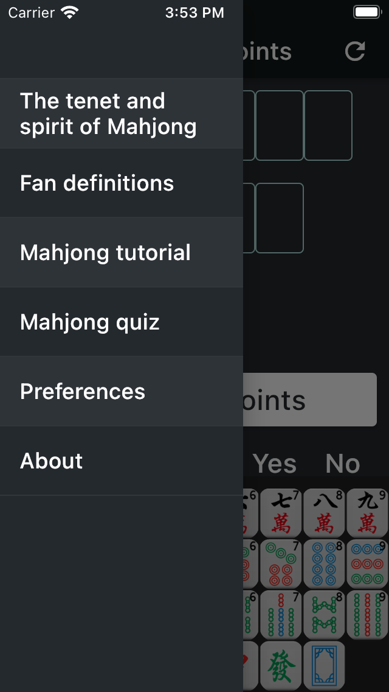
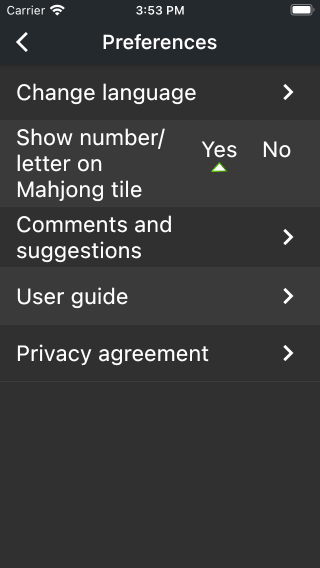
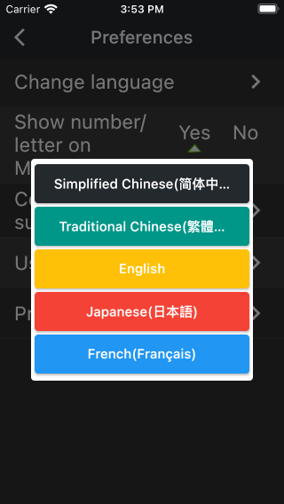
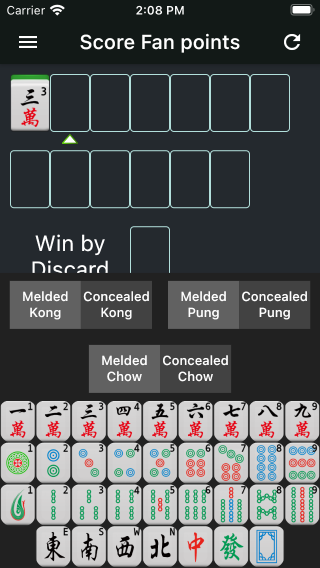
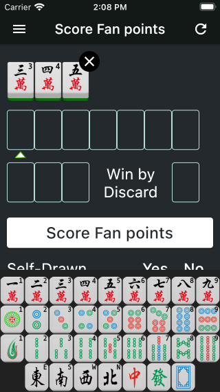

'Mahjong Bible' is an iOS/Android app which is based on the 2014 revised international 'Mahjong Competition Rules' published by the World Mahjong Organization. It includes scoring Fan points, Mahjong teaching, Mahjong quiz, and the subsequent version will add more features.
App Store Download Link:
App Store
Google Play Download Link:
Google Play
'Mahjong Bible' provides 5 different display languages: Simplified Chinese, Traditional Chinese, English, Japanese and French. By default, the App will automatically select the best display language according to the language setting of your operating system. When you want to switch to another language, you can click the '≡' button at the upper left corner of the homepage, click 'Preferences', click 'Change Language', and select your preferred language from the pop-up list, as shown below.
  To enter mahjong, please first tap the input position at the top of the interface, the input prompt triangle will then appear under the position, and the keyboard will pop up automatically. You can enter mahjong through the keyboard, as shown below.

For Concealed Kong, Melded Kong, Pung and Chow, please enter the first mahjong, and then tap the corresponding function button above the keyboard. For example, if you want to input a Kong of Bamboo 3, first click a position at the top of the page, then tap 'Bamboo 3' on the popup keyboard, and finally tap the 'Concealed Kong' function button above the keyboard.


Another example is when you want to input a Chow of Character 3,4,5, first click a position at the top of the page, then tap 'Character 3' on the popup keyboard, and finally tap the 'Melded Chow' button, the Character 4 & 5 will be added automatically. As shown below.
 Please keep in mind that some function buttons are not available in special cases. For example, the Honor Tiles(East, South, West, North, White Dragon, Red Dragon and Green Dragon) cannot make a Chow, so at this time the Concealed Chow and Melded Chow buttons are not displayed.
When complete entering all Mahjong, tap the 'Score fan points' button and App will score the points. If there is an error, the App will prompt you with an error message.
You can setup other information below the 'Score fan points' button, such as Self-Drawn, Last Tile, Prevalent Wind and Seat Wind, etc.
Tap the function button at the top left corner of the page, the drawer page will be opened. Tap the 'Fan definitions' item to see the detailed definition of all Mahjong Fans.
Tap the 'Comments and Suggestions' item in the drawer page to feedback your comments and suggestions by email. I'll be the first time for you to answer and hear. Thanks for your support!
App developer: 李朴之 (Puzhi Li)